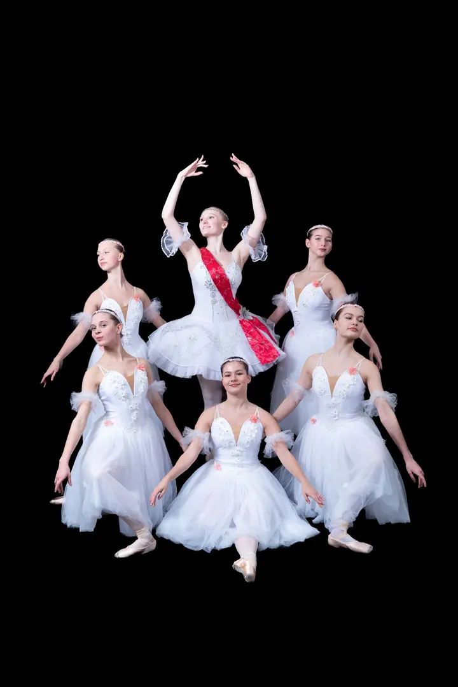
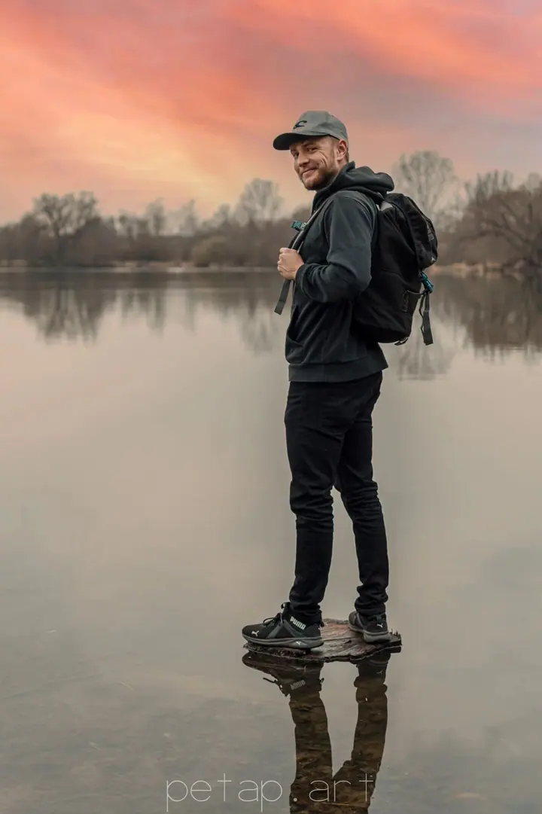
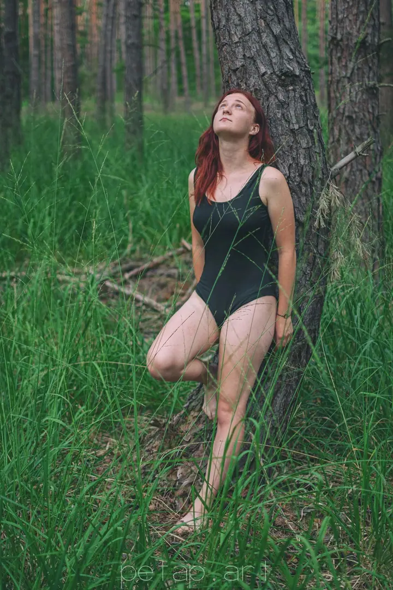

01 / 03
Plesy, stužkováky a eventy
Reportáž je můj žánr číslo jedna. Fotím maturitní plesy, stužkovací večírky, oslavy, firemní večírky, party i jiné akce tak, jak doopravdy proběhly.
Zeptat se na termín→


Fotím akce tak, jak doopravdy jsou
Zeptat se na termín →(01) Ahoj
Jmenuji se Petr Praslička a fotím v Hradci Králové a okolí plesy, stužkovací večírky , svatby i portréty . Nejvíc mě baví reportáž, kde se nic nehraje a fotky ukazují, jak to opravdu bylo. A fotky ode mě nečekáte týdny.
(02) Co fotím
01 / 03
Reportáž je můj žánr číslo jedna. Fotím maturitní plesy, stužkovací večírky, oslavy, firemní večírky, party i jiné akce tak, jak doopravdy proběhly.
Zeptat se na termín→02 / 03
Každá svatba je jedinečný příběh a já ho vyprávím skrze objektiv. Fotím jen obřad, nebo celý den od ranních příprav až po večerní zábavu.
Zeptat se na termín→03 / 03
Přirozené portréty venku ve městě i v přírodě. Hledám nápadité kompozice a všímám si detailů, které o vás něco řeknou.
Zeptat se na termín→(04) Postup
Od první zprávy po hotovou galerii.
Krok 1 z 4
Napíšete mi nebo zavoláte, ověříme, že mám váš termín volný, a sdělíte mi místo konání a své představy.
Krok 2 z 4
Potkáme se a probereme detaily: harmonogram, styl focení, vaše očekávání i konkrétní přání.
Krok 3 z 4
Pokud to čas dovolí, podíváme se společně na místo předem. V den focení pak víme, kde co fotit, a neztrácíme čas.
Krok 4 z 4
V den akce zachytím důležité momenty i drobné detaily. Hotové fotky máte rychleji než za tři týdny, často i do týdne.
Všímám si detailů, které tvoří atmosféru celé akce
(05) Za objektivem
Je mi 26 let, pocházím z Hradce Králové a fotografii se věnuji od roku 2013. Studoval jsem ji na střední i vysoké škole a dnes je mým denním šálkem.
Mým žánrem číslo jedna je reportážní fotografie. Svatba, ples, stužkovák, oslava nebo firemní večírek. Snažím se zachycovat věci tak, jak doopravdy jsou, všímat si důležitých detailů a hledat nápadité kompozice.
Na čem si zakládám, je rychlost. Fotky vám dodám mnohem dřív než za obvyklé tři týdny, často dokonce do týdne. Působím hlavně v Hradci Králové, Pardubicích a okolí.
Petr
Petr Praslička · Reportážní fotograf akcí a svateb
Cena je individuální, ale pro představu: focení pouze obřadu stojí 2 999 Kč a celodenní focení (12 hodin) 15 999 Kč.
Doprava stojí 6 Kč/km. V okolí Hradce Králové do 5 km je zdarma.
Mnohem dřív než za obvyklé tři týdny. Většinou je zvládnu dodat dokonce do týdne.
Maturitní plesy, stužkovací večírky, oslavy, firemní večírky, party a další eventy. Fotím hlavně v Hradci Králové, Pardubicích a okolí.
(07) Kontakt
Napište pár vět o tom, co si představujete, a termín, který se vám hodí.